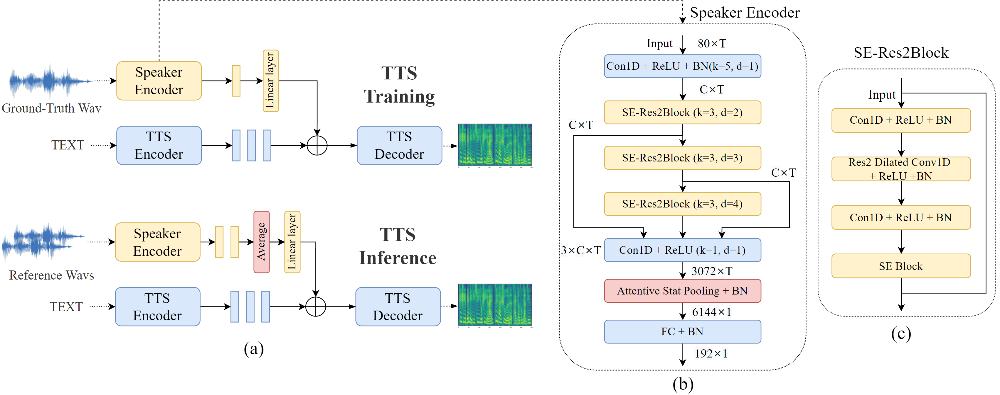

----------------------------- Model Architecture ------------------------

------------------------------ Speech Samples ----------------------------
Experimental Setup:
(1) real: the real utterances from the datasets.
(2) reconstruct : directly convert the ground-truth mel spectrograms back to speech.
(3) baseline : FastSpeech 2 with look-up table. (baseline cannot used in unseen speaker test)
(4) x-vector [1]: FastSpeech 2 with pretrained x-vector speaker encoder.
(5) ecapa (proposed) : our proposed method by combining FastSpeech 2 with pretrained ECAPA-TDNN speaker encoder.
Note: we split the VCTK dataset for training and testing: 8 speakers are held as unseen speakers cloning test, and others 101 speakers are used to train and evaluate models for seen speakers. We use LibriTTS for the unseen speaker cloning test. The pretrained models will not be finetuned and be adapted in useen speakers in our experiments to evaluate the voice cloing ability of our proposed method. Baseline use look-up table so it cannot be used in unseen speaker test.
(1) Seen Speaker In VCTK |
||||
|---|---|---|---|---|
| real | reconstruct | baseline | x-vector | ecapa |
(2) Unseen Speaker in VCTK |
|||
|---|---|---|---|
| real | reconstruct | x-vector | ecapa |
(3) Unseen Speaker in LibriTTS |
|||
|---|---|---|---|
| real | reconstruct | x-vector | ecapa |
[1] E. Cooper, C.-I. Lai, Y. Yasuda, F. Fang, X. Wang, N. Chen, and J. Yamagishi, “Zero-shot multi-speaker text-to-speech with state-of-the-art neural speaker embeddings,” in ICASSP 2020- 2020 IEEE International Conference on Acoustics, Speech and Signal Processing (ICASSP). IEEE, 2020, pp. 6184–6188.